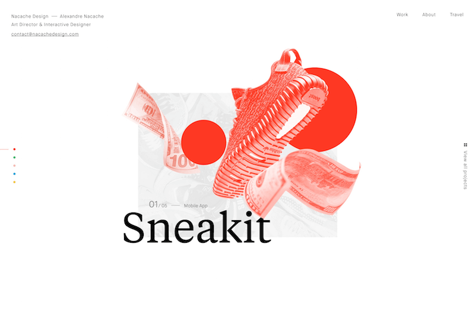
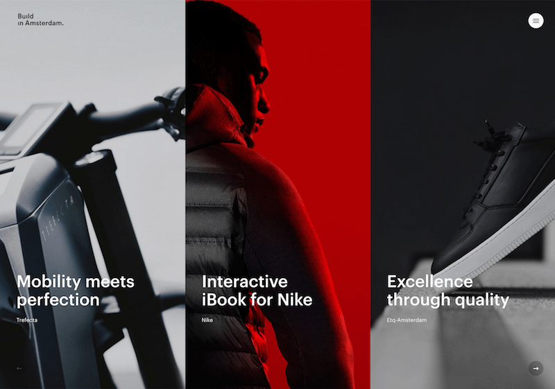

ABOUT THE AUTHOR
Cameron Chapman is a professional Web and graphic designer with over 6 years of experience. She writes for a number of blogs and is the author of The Smashing … More about Cameron
There are few things in design that are more subjective—or more important—than the use of color. A color that can evoke one reaction in one person may evoke the opposite reaction in another, due to culture, prior association, or even just personal preference.
Color theory is a science and art unto itself, which some build entire careers on, as color consultants or sometimes brand consultants. Knowing the effects color has on a majority of people is an incredibly valuable expertise that designers can master and offer to their clients.
Color theory is a science and art unto itself, which some build entire careers on, as color consultants or sometimes brand consultants. Knowing the effects color has on a majority of people is an incredibly valuable expertise that designers can master and offer to their clients.
Red (primary color)
Red is a very hot color. It’s associated with fire, violence, and warfare. It’s also associated with love and passion. In history, it’s been associated with both the Devil and Cupid. Red can actually have a physical effect on people, raising blood pressure and respiration rates. It’s been shown to enhance human metabolism, too.
Red can be associated with anger, but is also associated with importance (think of the red carpet at awards shows and celebrity events). Red also indicates danger (the reason stop lights and signs are red, and that warning labels are often red).
Outside the western world, red has different associations. For example, in China, red is the color of prosperity and happiness. It can also be used to attract good luck. In other eastern cultures, red is worn by brides on their wedding days. In South Africa, however, red is the color of mourning. Red is also associated with communism.
Red has become the color associated with AIDS awareness in Africa due to the popularity of the [RED] campaign.
In design, red can be a powerful accent color. It can have an overwhelming effect if it’s used too much in designs, especially in its purest form. It’s a great color to use when power or passion want to be portrayed in the design. Red can be very versatile, though, with brighter versions being more energetic and darker shades being more powerful and elegant.
Red can be associated with anger, but is also associated with importance (think of the red carpet at awards shows and celebrity events). Red also indicates danger (the reason stop lights and signs are red, and that warning labels are often red).
Outside the western world, red has different associations. For example, in China, red is the color of prosperity and happiness. It can also be used to attract good luck. In other eastern cultures, red is worn by brides on their wedding days. In South Africa, however, red is the color of mourning. Red is also associated with communism.
Red has become the color associated with AIDS awareness in Africa due to the popularity of the [RED] campaign.
In design, red can be a powerful accent color. It can have an overwhelming effect if it’s used too much in designs, especially in its purest form. It’s a great color to use when power or passion want to be portrayed in the design. Red can be very versatile, though, with brighter versions being more energetic and darker shades being more powerful and elegant.

The bright red of the illustration on the homepage of Nacache Design’s site gives the page a ton of energy and vibrancy.
Build in Amsterdam uses a more subdued red in its logo, giving it a feeling of elegance and sophistication.
In brief
While the information contained here might seem just a bit overwhelming, color theory is as much about the feeling a particular shade evokes than anything else. But here’s a quick reference guide for the common meanings of the colors discussed above:
- Type of color
- Color
- Common meanings
- Warm colors
- Red
- Orange
- Yellow
- Passion, Love, Anger
- Energy, Happiness, Vitality
- Happiness, Hope, Deceit
- Cool colors
- Green
- Blue
- Purple
- New Beginnings, Abundance, Nature
- Calm, Responsible, Sadness
- Creativity, Royalty, Wealth
- Neutral colors
- Black
- Gray
- White
- Brown
- Tan or Beige
- Cream or Ivory
- Mystery, Elegance, Evil
- Moody, Conservative, Formality
- Purity, Cleanliness, Virtue
- Nature, Wholesomeness, Dependability
- Conservative, Piety, Dull
- Calm, Elegant, Purity
- You can read the complete, original article at Smashing Magazine
More on our blog...
- THE WHOLE SERIES
- ● Color Theory for Designers, Part 1: The Meaning of Color
- ● Color Theory for Designers, Part 2: Understanding Concepts And Terminology
- ● Color Theory for Designers, Part 3: Creating Your Own Color Palettes
- FURTHER RESOURCES
- ● A Simple Web Developer’s Guide To Color
- ● The Code Side Of Color
- ● Color Meanings
- ● Color Meanings & Symbolism
- EXPLORE MORE ON
-